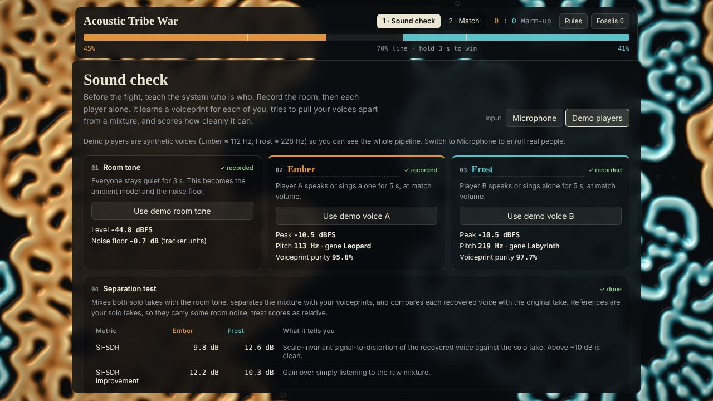
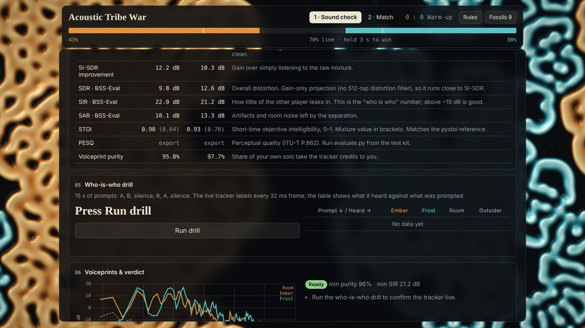
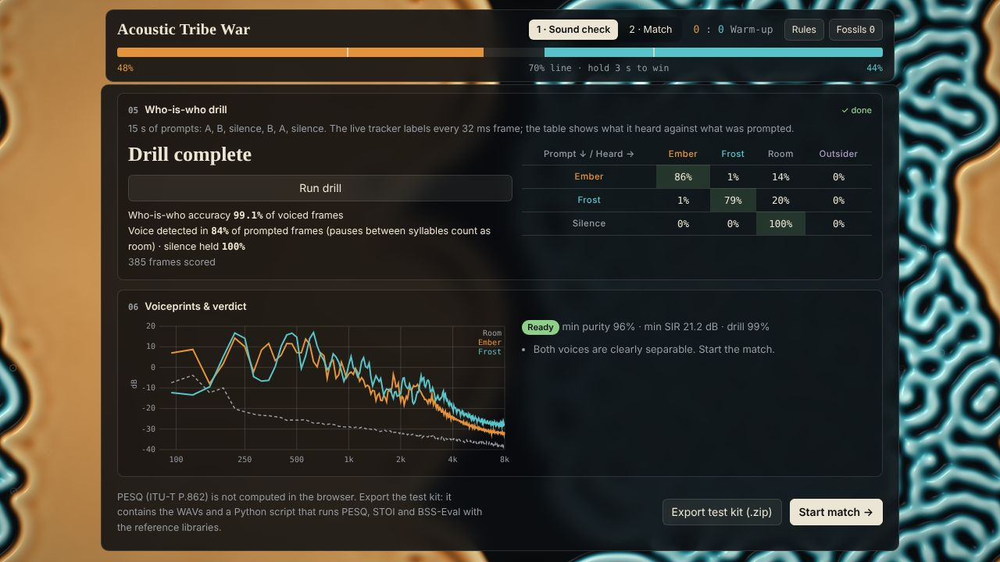
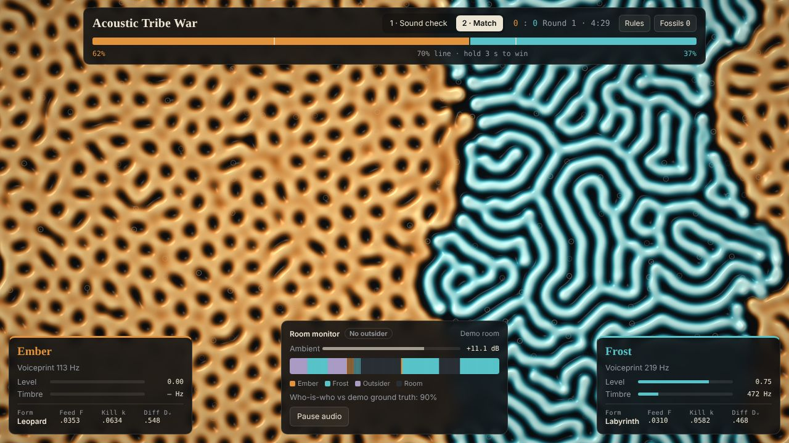
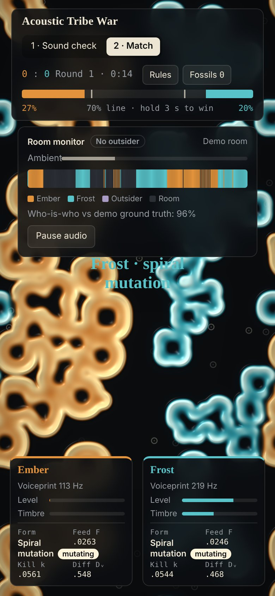
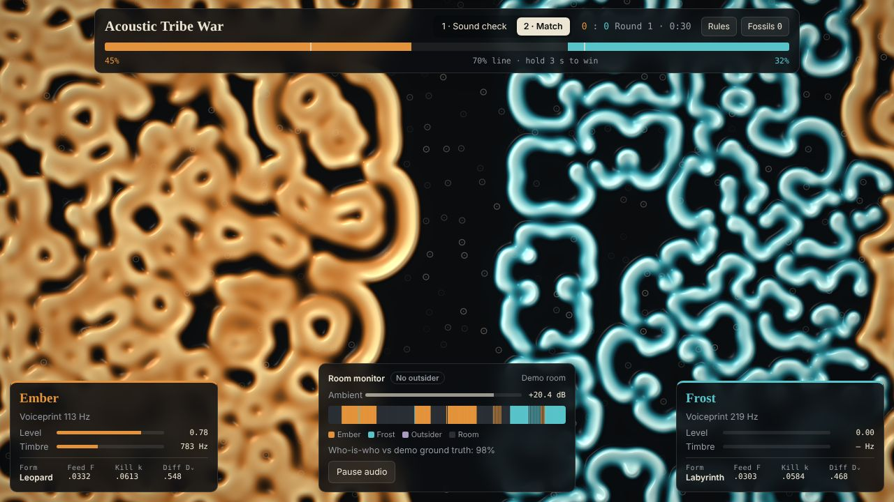
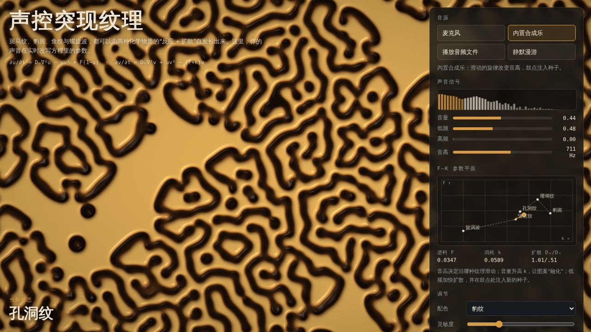

<meta charset="utf-8">
<meta name="viewport" content="width=device-width,initial-scale=1,viewport-fit=cover">
<title>Acoustic Tribe War</title>
<link rel="preconnect" href="https://fonts.googleapis.com">
<link rel="preconnect" href="https://fonts.gstatic.com" crossorigin>
<link rel="stylesheet" href="https://fonts.googleapis.com/css2?family=Fraunces:ital,opsz,wght@0,9..144,500;0,9..144,900;1,9..144,500&family=IBM+Plex+Sans:wght@400;500;600&family=IBM+Plex+Mono:wght@400;500&display=swap">
<style>
[hidden]{display:none!important}
*,*::before,*::after{box-sizing:border-box}
/* Layout: a single dark lab notebook. Full-bleed hero clip, then a narrow reading column that widens for figures, galleries and the metrics table. Deliberately one dark look, matching the game itself. */
:root{
  --ink:#0b0d0f; --panel:#13161a; --panel2:#181c21; --bone:#ece5d3; --muted:#9aa0a6; --line:rgba(236,229,211,.13);
  --a:#e3933b; --b:#58c3c9; --x:#a99bc4; --good:#8fcf8a;
  --f-display:"Fraunces",Georgia,"Times New Roman",serif;
  --f-body:"IBM Plex Sans",system-ui,-apple-system,"Segoe UI",sans-serif;
  --f-mono:"IBM Plex Mono",ui-monospace,Menlo,monospace;
  --col:68ch; --wide:1120px;
  color-scheme:dark;
}
html{scroll-behavior:smooth}
body{background:var(--ink);color:var(--bone);font-family:var(--f-body);font-size:16px;line-height:1.65;padding-inline:16px;padding-block:0 64px}
a{color:var(--bone);text-decoration-color:rgba(236,229,211,.4);text-underline-offset:3px}
a:hover{text-decoration-color:var(--bone)}
:focus-visible{outline:2px solid var(--bone);outline-offset:3px}
.wrap{max-width:var(--wide);margin-inline:auto}
.col{max-width:var(--col)}
h1,h2,h3{font-family:var(--f-display);text-wrap:balance;margin:0;line-height:1.1}
h2{font-size:clamp(28px,3.6vw,40px);font-weight:900}
h3{font-size:21px;font-weight:500}
p{margin:0}
.eyebrow{font-family:var(--f-mono);font-size:12px;letter-spacing:.14em;text-transform:uppercase;color:var(--muted)}
.mono{font-family:var(--f-mono);font-variant-numeric:tabular-nums}
.muted{color:var(--muted)}
.cA{color:var(--a)}.cB{color:var(--b)}.cX{color:var(--x)}

/* hero */
.hero{position:relative;margin-inline:-16px;min-height:min(78vh,720px);display:flex;align-items:flex-end;overflow:hidden;border-bottom:1px solid var(--line)}
.hero video{position:absolute;inset:0;width:100%;height:100%;object-fit:cover;opacity:.9}
.hero::after{content:"";position:absolute;inset:0;background:linear-gradient(180deg,rgba(11,13,15,.15) 0%,rgba(11,13,15,.2) 45%,rgba(11,13,15,.94) 100%)}
.hero .in{position:relative;z-index:1;width:100%;max-width:var(--wide);margin-inline:auto;padding:120px 16px 40px;display:flex;flex-direction:column;gap:16px}
.hero h1{font-size:clamp(46px,9vw,112px);font-weight:900;letter-spacing:-.02em;line-height:.95}
.hero h1 .s{display:block;font-style:italic;font-weight:500;font-size:.42em;letter-spacing:0;margin-top:.25em;color:var(--bone);opacity:.92}
.hero p.lede{max-width:56ch;font-size:18px;text-shadow:0 1px 12px rgba(0,0,0,.6)}
.cta{display:flex;gap:10px;flex-wrap:wrap;margin-top:6px}
.btn{display:inline-flex;align-items:center;gap:8px;padding:10px 16px;border-radius:8px;border:1px solid var(--line);background:rgba(11,13,15,.6);text-decoration:none;font-weight:500;backdrop-filter:blur(8px)}
.btn.primary{background:var(--bone);color:var(--ink);border-color:var(--bone)}
.btn:hover{border-color:var(--bone)}
.cap{position:absolute;right:16px;top:calc(env(safe-area-inset-top,0px) + 14px);z-index:1;font-family:var(--f-mono);font-size:11.5px;color:var(--bone);background:rgba(11,13,15,.6);padding:4px 8px;border-radius:5px}

/* sections */
section{padding-block:72px 0}
.head{display:flex;flex-direction:column;gap:10px;margin-bottom:26px}
.lead{font-size:17px;color:var(--bone);max-width:var(--col)}
.body{display:flex;flex-direction:column;gap:14px;max-width:var(--col);color:#d9d3c3}
.eq{font-family:var(--f-mono);font-size:14px;line-height:2;background:var(--panel);border:1px solid var(--line);border-radius:8px;padding:14px 18px;overflow-x:auto;white-space:nowrap;color:var(--bone)}
.eq .c{color:var(--muted)}

/* species legend */
.species{display:grid;grid-template-columns:repeat(4,minmax(0,1fr));gap:12px;margin-top:22px}
.sp{border-top:3px solid var(--c);padding-top:10px;display:flex;flex-direction:column;gap:4px;min-width:0}
.sp b{font-family:var(--f-display);font-size:20px;font-weight:500;color:var(--c)}
.sp span{font-size:14px;color:var(--muted);line-height:1.5}

/* timeline of versions */
.versions{display:flex;flex-direction:column;gap:56px}
.ver{display:grid;grid-template-columns:minmax(0,1fr) minmax(0,1.35fr);gap:28px;align-items:start}
.ver.flip{grid-template-columns:minmax(0,1.35fr) minmax(0,1fr)}
.ver.flip .txt{order:2}
.ver .txt{display:flex;flex-direction:column;gap:12px;min-width:0}
.ver .tag{font-family:var(--f-mono);font-size:12px;color:var(--muted);display:flex;gap:10px;align-items:center}
.ver .tag i{font-style:normal;border:1px solid var(--line);border-radius:4px;padding:1px 6px;color:var(--bone)}
.ver ul{margin:0;padding-left:1.1em;display:flex;flex-direction:column;gap:6px;color:#d9d3c3;font-size:15px}
figure{margin:0;display:flex;flex-direction:column;gap:8px;min-width:0}
figure video,figure img{width:100%;max-width:100%;display:block;border-radius:8px;border:1px solid var(--line);background:var(--panel)}
figcaption{font-size:13px;color:var(--muted);line-height:1.5}

/* pipeline */
.pipe{display:grid;grid-template-columns:repeat(6,minmax(0,1fr));gap:0;margin-top:8px;border:1px solid var(--line);border-radius:10px;overflow:hidden}
.pipe div{padding:14px 14px 16px;border-right:1px solid var(--line);display:flex;flex-direction:column;gap:6px;position:relative;min-width:0;background:var(--panel)}
.pipe div:last-child{border-right:0}
.pipe div:nth-child(even){background:var(--panel2)}
.pipe b{font-size:14px;font-weight:600}
.pipe span{font-size:13px;color:var(--muted);line-height:1.45}
.pipe em{font-style:normal;font-family:var(--f-mono);font-size:11px;color:var(--muted)}
.pipe div:not(:last-child)::after{content:"→";position:absolute;right:-8px;top:14px;font-size:13px;color:var(--muted);background:var(--ink);line-height:1;padding:1px 0;z-index:1}

/* metrics */
.tablewrap{overflow-x:auto;border:1px solid var(--line);border-radius:10px}
table{border-collapse:collapse;width:100%;font-size:14px;min-width:620px}
th,td{padding:10px 14px;border-bottom:1px solid var(--line);text-align:left;vertical-align:top}
tr:last-child td{border-bottom:0}
th{font-weight:500;color:var(--muted);font-size:12.5px;background:var(--panel)}
td.v{font-family:var(--f-mono);font-variant-numeric:tabular-nums;white-space:nowrap;text-align:right}
td.d{color:var(--muted);font-size:13.5px}
.figs{display:grid;grid-template-columns:repeat(3,minmax(0,1fr));gap:14px;margin-top:22px}
.kpis{display:grid;grid-template-columns:repeat(4,minmax(0,1fr));gap:1px;background:var(--line);border:1px solid var(--line);border-radius:10px;overflow:hidden;margin-bottom:18px}
.kpis div{background:var(--panel);padding:14px 16px;display:flex;flex-direction:column;gap:2px;min-width:0}
.kpis b{font-family:var(--f-mono);font-weight:500;font-size:24px;font-variant-numeric:tabular-nums}
.kpis span{font-size:12.5px;color:var(--muted);line-height:1.4}

/* gallery */
.gallery{display:grid;grid-template-columns:repeat(12,minmax(0,1fr));gap:14px}
.g1{grid-column:span 8}.g2{grid-column:span 4;grid-row:span 2}.g3{grid-column:span 4}.g4{grid-column:span 4}
.g2 img{height:100%;object-fit:cover;object-position:top}

/* play + limits */
.two{display:grid;grid-template-columns:minmax(0,1fr) minmax(0,1fr);gap:28px}
.card{border:1px solid var(--line);border-radius:10px;padding:20px 22px;background:var(--panel);display:flex;flex-direction:column;gap:12px;min-width:0}
.card ol,.card ul{margin:0;padding-left:1.2em;display:flex;flex-direction:column;gap:8px;font-size:15px;color:#d9d3c3}
.files{font-family:var(--f-mono);font-size:13px;line-height:1.9;color:var(--muted)}
.files b{color:var(--bone);font-weight:500}
footer{margin-top:72px;padding-top:20px;border-top:1px solid var(--line);font-size:13px;color:var(--muted);display:flex;justify-content:space-between;gap:12px;flex-wrap:wrap}

@media (max-width:900px){
  .ver,.ver.flip{grid-template-columns:minmax(0,1fr)}
  .ver.flip .txt{order:0}
  .pipe{grid-template-columns:repeat(2,minmax(0,1fr))}
  .pipe div{border-bottom:1px solid var(--line)}
  .pipe div::after{display:none}
  .species,.kpis{grid-template-columns:repeat(2,minmax(0,1fr))}
  .figs{grid-template-columns:minmax(0,1fr)}
  .two{grid-template-columns:minmax(0,1fr)}
  .gallery{grid-template-columns:minmax(0,1fr) minmax(0,1fr)}
  .g1{grid-column:span 2}.g2{grid-column:span 1;grid-row:span 2}.g3,.g4{grid-column:span 1}
}
@media (max-width:520px){
  .gallery{grid-template-columns:minmax(0,1fr)}
  .g1,.g2,.g3,.g4{grid-column:auto;grid-row:auto}
  .hero{min-height:560px}
}
@media (prefers-reduced-motion:reduce){html{scroll-behavior:auto}}
</style>

<header class="hero">
  <video id="heroVid" src="media/timelapse.mp4" poster="media/timelapse-poster.jpg" autoplay muted loop playsinline aria-label="Timelapse of a match: Ember's leopard pattern pushes into Frost's labyrinth"></video>
  <span class="cap">Match timelapse · 8×</span>
  <div class="in">
    <div class="eyebrow">Reaction–diffusion · voice · territory</div>
    <h1>Acoustic Tribe War<span class="s">Your voice grows a species. Two species fight for the screen.</span></h1>
    <p class="lede">An interactive installation built on the Gray–Scott reaction–diffusion equations, the same mechanism behind zebra stripes, leopard spots and fish-skin labyrinths. Each player's voiceprint becomes the genome of a living pattern; volume, pitch and room noise decide who takes the substrate.</p>
    <div class="cta">
      <a class="btn primary" href="https://claude.ai/artifact/U9jQtTsijxnyxnwgfZyFse" target="_blank" rel="noopener">Play Tribe War ↗</a>
      <a class="btn" href="https://claude.ai/artifact/JpdzFGmYjb2Na4tZpV1GRG" target="_blank" rel="noopener">Open the first visualizer ↗</a>
      <a class="btn" href="#how">How it works</a>
    </div>
  </div>
</header>

<main class="wrap">

<section id="idea">
  <div class="head">
    <div class="eyebrow">The idea</div>
    <h2>A nutrient field, and the chemicals that eat it</h2>
  </div>
  <div class="body">
    <p>Pour two chemicals into a dish. One is food, <i>u</i>. The other, <i>v</i>, copies itself by eating the food and slowly decays. Both diffuse, but at different speeds. Depending on two dials, the feed rate <i>F</i> and the kill rate <i>k</i>, the mixture settles into spots, stripes, holes, labyrinths or travelling spirals. Alan Turing proposed this in 1952 as a way to explain animal markings.</p>
    <p>This project hands those dials to sound. In the full game there are three replicators competing for the same food: one per player and one for strangers.</p>
  </div>
  <div class="eq" style="margin-top:20px">∂v<sub>A</sub>/∂t = D<sub>A</sub>∇²v<sub>A</sub> + g<sub>A</sub>·u v<sub>A</sub>² − (F̄ + k<sub>A</sub>) v<sub>A</sub> − c · v<sub>A</sub>(v<sub>B</sub> + v<sub>X</sub>)<br>∂u/∂t = ∇²u − u(v<sub>A</sub>² + v<sub>B</sub>² + v<sub>X</sub>²) + F̄(1 − u)　<span class="c">F̄ = feed rate mixed by local concentration</span></div>
  <div class="species">
    <div class="sp" style="--c:var(--a)"><b>Ember</b><span>Player A. A deep voice gives large, fast-spreading leopard spots.</span></div>
    <div class="sp" style="--c:var(--b)"><b>Frost</b><span>Player B. A high voice gives a dense, stable labyrinth.</span></div>
    <div class="sp" style="--c:var(--x)"><b>Outsider</b><span>Any voice matching neither voiceprint. Grows a grey third species that harms both tribes.</span></div>
    <div class="sp" style="--c:var(--bone)"><b>Room tone</b><span>Ambient noise. Shown as one small ring glyph scattered across the field.</span></div>
  </div>
</section>

<section id="versions">
  <div class="head">
    <div class="eyebrow">How it was built</div>
    <h2>Three iterations</h2>
  </div>
  <div class="versions">
    <article class="ver">
      <div class="txt">
        <div class="tag"><i>v1</i> Sound-driven visualizer</div>
        <h3>One voice, one living texture</h3>
        <p class="muted">Single-player prototype, Chinese UI.</p>
        <ul>
          <li>Pitch (spectral centroid) slides the system along a path in the F–k plane: spirals → labyrinth → holes → coral → leopard spots.</li>
          <li>Volume raises the kill rate, so loud sounds make the pattern melt.</li>
          <li>Bass hits speed up diffusion and drop new seeds on the beat.</li>
          <li>A live F–k map traces where your voice has taken the chemistry.</li>
        </ul>
      </div>
      <figure>
        <video src="media/visualizer.mp4" poster="media/visualizer-poster.jpg" muted loop playsinline controls preload="metadata" aria-label="v1 visualizer reacting to the built-in synth"></video>
        <figcaption>v1 driven by its built-in synth. Recorded headless and sped up 1.6×.</figcaption>
      </figure>
    </article>

    <article class="ver flip">
      <div class="txt">
        <div class="tag"><i>v2</i> Two tribes</div>
        <h3>Competition on one substrate</h3>
        <ul>
          <li>Two self-replicating species share the food and inhibit each other where they touch. The contact front glows white-hot.</li>
          <li>Volume speeds up replication and drops seeds along your own border, so territory advances from the front line.</li>
          <li>A sudden pitch jump triggers a 1.5 s spiral mutation that hits the opponent harder.</li>
          <li>Hold 70% of the field for 3 s and your species floods the screen. The winning moment is saved as an acoustic fossil.</li>
        </ul>
        <p class="muted" style="font-size:14px">Balancing: a CPU prototype showed leopard spots lose to labyrinths in seconds at equal settings, so the low-voice gene gets a small growth bonus.</p>
      </div>
      <figure>
        <video src="media/match.mp4" poster="media/match-poster.jpg" muted loop playsinline controls preload="metadata" aria-label="Opening of a match with demo players"></video>
        <figcaption>Opening 30 seconds of a match with demo players: seeding, a spiral mutation, both fronts meeting. 1.8×.</figcaption>
      </figure>
    </article>

    <article class="ver">
      <div class="txt">
        <div class="tag"><i>v3</i> Sound check + match</div>
        <h3>Teach it who is who before the fight</h3>
        <p>Playtesting showed the voices blurred together, so v3 adds a measured enrollment stage. It records room tone and each player alone, learns a voiceprint per person, then scores how cleanly it can pull your voices back out of a mixture.</p>
        <ul>
          <li>A 15-second drill prompts A, B and silence, and shows a table of what was prompted against what the tracker heard.</li>
          <li>The verdict reads Ready, Playable or Too similar, with concrete tips.</li>
          <li>In the match, room tone becomes scattered glyphs and unknown voices grow the grey outsider species.</li>
        </ul>
      </div>
      <figure>
        <video src="media/drill.mp4" poster="media/drill-poster.jpg" muted loop playsinline controls preload="metadata" aria-label="Who-is-who drill running in the sound check"></video>
        <figcaption>The who-is-who drill with demo voices, ending in its confusion table. 1.6×.</figcaption>
      </figure>
    </article>
  </div>
</section>

<section id="how">
  <div class="head">
    <div class="eyebrow">How it works</div>
    <h2>From air pressure to territory</h2>
    <p class="lead">Every 32 ms the tracker decides whose sound it is, then turns that into chemistry on the GPU.</p>
  </div>
  <div class="pipe">
    <div><em>01</em><b>Capture</b><span>Mic at 16 kHz, 1024-sample window, hop 512.</span></div>
    <div><em>02</em><b>Spectrum</b><span>512-point STFT, speech band 94 Hz–4 kHz.</span></div>
    <div><em>03</em><b>Voiceprints</b><span>KL-NMF bases: 10 per player and 4 for the room, learned at enrollment.</span></div>
    <div><em>04</em><b>Attribution</b><span>Fit activations per frame and weigh in pitch likelihood. Label each frame A, B, room or outsider.</span></div>
    <div><em>05</em><b>Genes</b><span>Pitch sets F, k and D. Level sets growth. A pitch jump triggers a mutation.</span></div>
    <div><em>06</em><b>Field</b><span>WebGL2 float textures, 12 steps per frame. A 64-cell tally reads territory back.</span></div>
  </div>
</section>

<section id="results">
  <div class="head">
    <div class="eyebrow">Sound check results</div>
    <h2>How well can it tell two voices apart?</h2>
    <p class="lead">Measured on the built-in demo voices (synthetic, ≈112 Hz and ≈228 Hz) plus room noise. Real voices will score differently, so run the sound check before every session.</p>
  </div>
  <div class="kpis">
    <div><b class="mono">99.2%</b><span>Drill: voiced frames credited to the right player</span></div>
    <div><b class="mono">≈96%</b><span>Live match attribution against the demo script</span></div>
    <div><b class="mono">22 dB</b><span>SIR: how little the other player leaks in</span></div>
    <div><b class="mono">0.90 / 0.93</b><span>STOI after separation, up from 0.64 / 0.76</span></div>
  </div>
  <div class="tablewrap">
    <table>
      <thead><tr><th>Metric</th><th class="cA">Ember</th><th class="cB">Frost</th><th>Meaning</th></tr></thead>
      <tbody>
        <tr><td>SI-SDR</td><td class="v">9.8 dB</td><td class="v">12.6 dB</td><td class="d">Scale-invariant distortion of the recovered voice against the solo take.</td></tr>
        <tr><td>SI-SDR improvement</td><td class="v">+12.2 dB</td><td class="v">+10.3 dB</td><td class="d">Gain over listening to the raw mixture.</td></tr>
        <tr><td>SDR · BSS-Eval</td><td class="v">9.8 dB</td><td class="v">12.6 dB</td><td class="d">Gain-only projection, without the distortion filter, so it runs close to SI-SDR.</td></tr>
        <tr><td>SIR · BSS-Eval</td><td class="v">22.0 dB</td><td class="v">21.2 dB</td><td class="d">The "who is who" number. Above 15 dB is good.</td></tr>
        <tr><td>SAR · BSS-Eval</td><td class="v">10.1 dB</td><td class="v">13.3 dB</td><td class="d">Artifacts and leftover room noise.</td></tr>
        <tr><td>STOI (mixture)</td><td class="v">0.90 (0.64)</td><td class="v">0.93 (0.76)</td><td class="d">Intelligibility, 0–1. Cross-checked against pystoi: 0.902 / 0.932.</td></tr>
        <tr><td>PESQ</td><td class="v muted">kit</td><td class="v muted">kit</td><td class="d">Not computed in the browser. The exported kit runs it with the reference library.</td></tr>
        <tr><td>Voiceprint purity</td><td class="v">95.8%</td><td class="v">97.7%</td><td class="d">Share of your own solo take credited to you.</td></tr>
      </tbody>
    </table>
  </div>
  <div class="figs">
    <figure><figcaption>Enrollment: room tone, then each player alone.</figcaption></figure>
    <figure><figcaption>The separation test as it appears in the app.</figcaption></figure>
    <figure><figcaption>Average spectra per voice, and the verdict.</figcaption></figure>
  </div>
</section>

<section id="gallery">
  <div class="head">
    <div class="eyebrow">Gallery</div>
    <h2>The field in play</h2>
  </div>
  <div class="gallery">
    <figure class="g1"><figcaption>Four and a half minutes in: Ember's leopard field at 62% against Frost's labyrinth. Ember was pushed with scripted seeding for this capture.</figcaption></figure>
    <figure class="g2"><figcaption>Phone layout during a match.</figcaption></figure>
    <figure class="g3"><figcaption>Room monitor: a 10-second strip of who was heard.</figcaption></figure>
    <figure class="g4"><figcaption>v1 in its labyrinth regime.</figcaption></figure>
  </div>
</section>

<section id="play">
  <div class="two">
    <div class="card">
      <div class="eyebrow">Run it</div>
      <h3>Playing with real voices</h3>
      <ol>
        <li>Download the game's HTML file and open it in Chrome or Edge. Microphone access is blocked inside Claude's preview, but demo players work there.</li>
        <li>In <b>Sound check</b>, choose Microphone. Record 3 s of room tone, then each player alone for 5 s at match volume.</li>
        <li>Run the who-is-who drill. Aim for <b>Ready</b>; if it says Too similar, exaggerate the contrast (one low and full, one high and bright).</li>
        <li>Start the match. Get loud to grow, jump in pitch to mutate. Bystanders who talk will grow grey outsiders.</li>
        <li>Use <b>Export test kit</b> to get WAVs and <span class="mono">evaluate.py</span> for PESQ, STOI and BSS-Eval with the reference libraries.</li>
      </ol>
    </div>
    <div class="card">
      <div class="eyebrow">Known limits</div>
      <h3>What it does not do yet</h3>
      <ul>
        <li>Outsider detection catches only about half of an unknown voice's frames when that voice's pitch sits between the two players'. It never flagged the enrolled players as outsiders in testing.</li>
        <li>BSS-Eval uses gain-only projections, and the references are the solo takes, which include room noise. Treat scores as relative.</li>
        <li>A labyrinth front is very stable, so rounds can stall short of the 70% line without a strong push.</li>
        <li>The clips on this page were recorded in a headless browser with software rendering and sped up. Real hardware runs smoother.</li>
      </ul>
    </div>
  </div>
</section>

<footer>
  <span>Acoustic Tribe War · Gray–Scott model, KL-NMF voiceprints, WebGL2</span>
  <span>Built October 2026</span>
</footer>
</main>

<script>
(()=>{
  const reduce=matchMedia('(prefers-reduced-motion: reduce)').matches;
  const hero=document.getElementById('heroVid');
  if(reduce&&hero){hero.removeAttribute('autoplay');hero.pause();}
  // play section clips only while visible
  const vids=[...document.querySelectorAll('figure video')];
  if('IntersectionObserver' in window&&!reduce){
    const io=new IntersectionObserver(es=>es.forEach(e=>{const v=e.target;if(e.isIntersecting){v.play().catch(()=>{});}else v.pause();}),{threshold:.4});
    vids.forEach(v=>io.observe(v));
  }
})();
</script>
